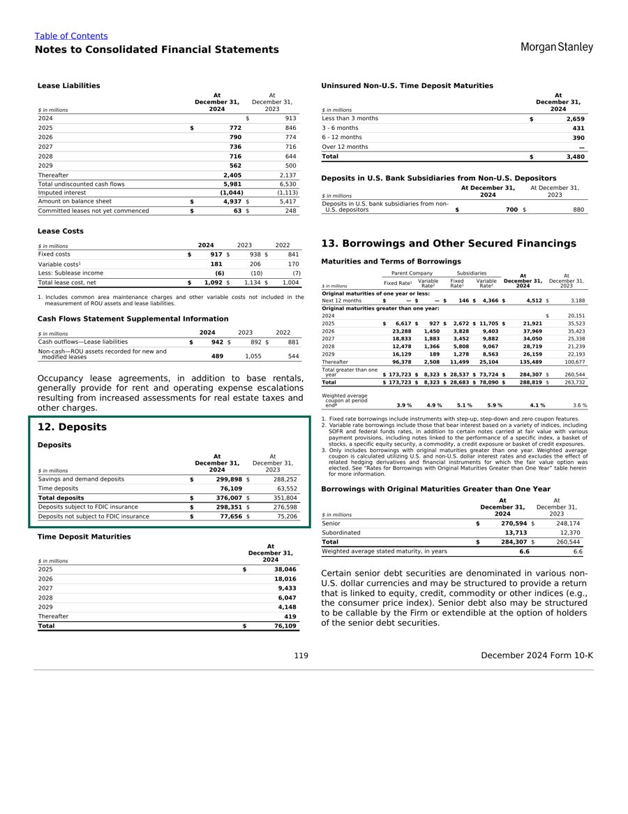
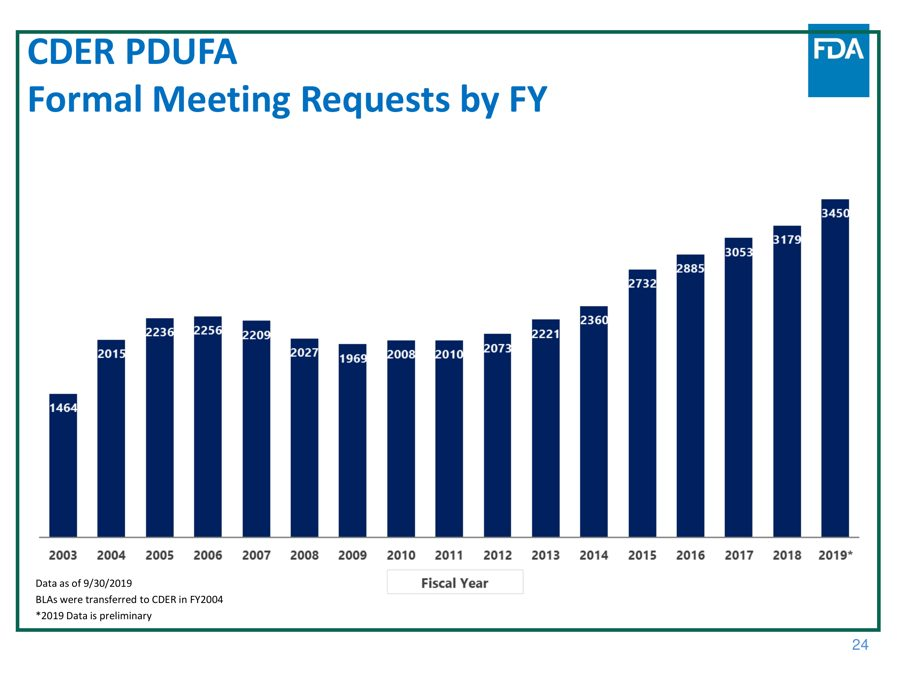
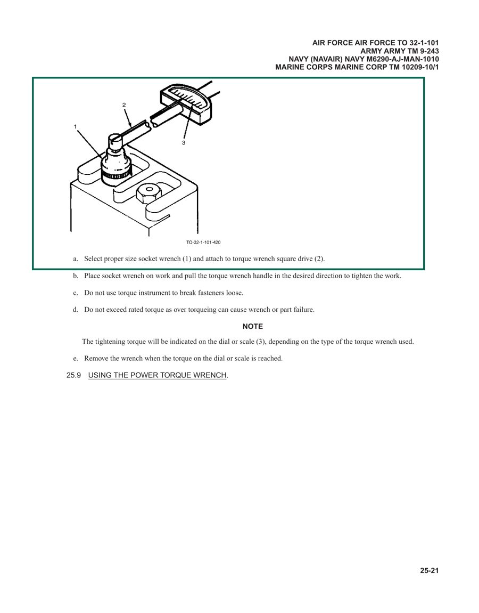

vidore-v3-loops00 · research + build plan · English, one dataset at a time2026-09-28 · rev 10-01 · for review
Plan · s00 · what ViDoRe V3 is, who is winning, and what we build first
ViDoRe V3's best English system is a retriever plus an LLM that re-reads the pages — we start there, on bank annual reports
ViDoRe V3 asks enterprise questions of real PDFs where the answer often sits in a table, chart or diagram. On English queries the top published pipeline, an 8B visual retriever with Claude Opus 4.5 as an agentic reranker, reaches 74.6 NDCG@10. Its retriever alone scores 69.1. Even when handed the right pages, the best generator answers 72.6% correctly. I recommend starting with finance_en: six US bank 10-Ks, 309 English questions, 173 of them over tables.
1 · Bottom line — retrieval is movable, answers cap near 73%
retrieval · English, 5 public sets74.6 NDCG@10
NeMo Retriever's agentic pipeline, against 69.1 for the same retriever alone. The gain costs about 136 s per query, against 0.67 s (NVIDIA's figures, all 8 sets).
answer · 8 public sets66.7% correct
The best answers with retrieval (ColEmbed-3B-v2 pages, GPT-5.2). With the true pages the best is 72.6% (Gemini 3 Pro on page images).
page as image vs as text67.5 vs 57.7
A visual retriever against the best text embedder, English queries. OCR text plus a strong reranker overtakes it (70.9).
grounding · bbox F10.089 vs 0.602 human
No model can yet point at the evidence on the page. The whole field leaves this score on the table.
reference answers · my hand check2 of 5 off
Two of the five demo references in §4 misread their table or chart. The judge scores against them, so we audit before we trust a failure.
The commercial prize is the answer and its evidence, not the ranking. So the loop should be gated on answer accuracy, with NDCG@10 reported so we can compare with the board.
2 · What is scored — three layers, one leaderboard
Every query comes with human-graded relevant pages, human bounding boxes on those pages, and a reference answer. That lets the benchmark score three separate things. Only the first has a public leaderboard.
Fig 1 · one query through the three scored layers
Takeaway: the board ranks retrievers only. Answer accuracy and grounding are ours to measure, which is where a commercial system is judged.arXiv 2601.08620 §4–6 · huggingface.co/blog/QuentinJG/introducing-vidore-v3 · docs/research/README.md
query type
what it asks
retrieval NDCG@10
boolean
yes / no
70.3
numerical
a value read or calculated
65.8
extractive
cite a fact
65.4
compare-contrast
similarities, differences
59.9
enumerative
list every item
59.7
multi-hop
join facts across pages
53.9
open-ended
synthesise
48.1
Takeaway: difficulty rises with the number of pages an answer needs, about 2.4 points lost per extra relevant page. Content type matters less: text 59.3, chart 56.3, infographic 55.2, table 53.9, image 49.3. ColEmbed-3B-v2, all six languages.arXiv 2601.08620 Fig 5, Tables 13 and 15
3 · Five English datasets — finance first, textbooks last
The five English corpora differ in document type, in how visual they are, and in whether retrieval matters at all. "Answerable blind" is the share of queries at least one of six LLMs answered correctly with no documents. A high share means the dataset tests model memory, not the system.
dataset
documents
pages
EN queries
visual content in EN queries
answerable blind
best NDCG@10 (EN)
commercial read (my judgement)
finance_enrecommended first
2024 10-K annual reports of 6 US banks (JPMorgan, Wells Fargo, Citi, Goldman, BofA, Morgan Stanley)
2,942
309
table 173 · chart 20 · infographic 4
31.7%
73.7 · 75.9 agentic
high — equity and credit research, bank benchmarking; tables are the commonest commercial evidence
pharmaceuticals
52 FDA / CDER slide decks, 2017–2021
2,313
364
infographic 97 · table 88 · chart 71 · image 47
57.1%
71.1 · 74.8 agentic
high — regulatory intelligence; the most chart- and infographic-heavy set
industrial
27 US Air Force technical orders (maintenance manuals, 1999–2025)
5,244
283
table 88 · infographic 54 · image 21 · chart 2
38.9%
61.9 · 63.4 agentic
high — maintenance copilots; the largest and hardest corpus
hr
14 European Commission labour and employment reports, 2024
1,110
318
table 112 · chart 104 · infographic 33
36.5%
72.8 · 74.5 agentic
medium — policy and labour-market analysis; public sector
computer_science
2 OpenStax textbooks (intro CS, Python)
1,360
215
table 77 · infographic 47 · chart 10
86.5%
82.4 · 84.5 agentic
low — academic, and most questions are answerable from memory; use it as the smoke set
Takeaway: in finance only 31.7% of questions can be answered without the documents, so the system has to earn every point. In computer science 86.5% can, so a high score there proves little. A query can carry several content types, so the visual counts overlap. The first NDCG@10 figure is the best single retriever, the second the agentic pipeline.content counts: data/cache via vidoreloop stats (English rows) · answerable blind: arXiv 2601.08620 Table 22 · NDCG: docs/research/mteb_vidore3_scores_2026-09-28.json, vidore-benchmark results/metrics
4 · Demo questions — one per dataset, two references wrong
For each dataset, one human-written English question whose evidence sits in a table, chart or diagram. The green box is the annotator's bounding box. I checked every reference answer against its page by hand.

morgan_stanley_2024 p.119 · grade 2 (full answer) · corpus 2037
finance_en · query 181reference holds
“What were Morgan Stanley's total deposit amounts and the value of uninsured deposits in 2024?”
reference
Total deposits $376,007 million; uninsured $77,656 million.
on the page
Note 12 table: “Total deposits 376,007”; “Deposits not subject to FDIC insurance 77,656”. Matches.
what it takes
Find one small table among the 2,942 pages of six banks' 10-Ks, and know that “uninsured” means “not subject to FDIC insurance”.
why it pays
Deposit mix and uninsured share were the bank-run signal of 2023; analysts pull this for every bank each quarter.
extractivenumericaltable + text2 relevant pages

CDER_New_Drugs_Program_2019_Update p.23 · grade 2 · corpus 1773
pharmaceuticals · query 313reference off
“What is the difference between the number of formal meeting requests in the year 2018 and 2010?”
reference
1,109 (the annotator read FY2010 as 2,070).
on the page
FY2018 bar 3,179; FY2010 bar 2,008. The difference is 1,171. No bar reads 2,070; FY2012 reads 2,073. The reference is wrong by 62.
the text path
The dataset's OCR markdown lists the 17 bar labels out of year order (“3450 3179 3053 … 2008 2010 1969 1464”). A text-only system cannot tell which value belongs to 2010.
why it pays
Reading the numbers off regulator charts is routine competitive-intelligence work.
numericalchart only1 relevant page

TO_32-1-101 p.25-21 · grade 2 · corpus 4253
industrial · query 224reference holds
“Provide Step A for using a torque wrench.”
reference
Select the proper size socket wrench (1) and attach it to the torque wrench square drive (2).
on the page
Step a, word for word; the (1) and (2) point into the diagram above it. Matches.
what it takes
Find the right procedure among 5,244 manual pages. Many sections share the same words, and a later section covers the power torque wrench.
why it pays
Technicians searching manuals is the classic maintenance-copilot use case, where a wrong step is a safety issue.
Little. Most models know this without the book, which is why 86.5% of this set is answerable blind.
why it pays
Little commercially. It is a cheap sanity check for the pipeline.
extractivetable2 relevant pages
Takeaway: two of five references misread the evidence. A judge scoring against them would fail a correct system, so every failure the loop learns from gets a reference check first. Five questions is not a rate; the audit in §7 measures one.docs/research/demo_questions.json (_checks) · page images: HF parquet at the pinned revisions, boxes drawn from qrels
5 · Scoreboard — open late-interaction models own the top fifteen
what “open late-interaction” means
Open means open weights: the model is a download on Hugging Face, run on your own machine under its licence, as opposed to a closed embedding API such as Voyage or Cohere. Open is not the same as free for commercial use. EVIE and Tomoro are Apache-2.0, but nemotron-8B is CC-BY-NC and webAI's ColVec is non-commercial.
Late interaction is about how a page and a question are compared. A single-vector model squeezes the whole page into one vector before the question arrives, then compares one vector with one. A late-interaction model, in the ColBERT / ColPali style, keeps one vector per small patch of the page image (≈750–1,280 per page), and one per word of the question. The question meets the page late, patch by patch: each question word finds its best-matching patch, and those best matches are summed (“MaxSim”).
Fig 2a · one vector per page against one vector per patch
Takeaway: late interaction keeps the page's detail until the question arrives, which is why it leads on tables and charts. The cost is about 200 times the storage of one vector, which is trivial at 2,942 pages.scores: English-query mean of 5 (Fig 2, docs/research/mteb_vidore3_scores_2026-09-28.json) · sizes: docs/research/systems.md
There are two retrieval boards, and neither scores answers. The MTEB board ranks single models over all 10 datasets and 6 query languages. The ViDoRe pipeline board, launched in February 2026, ranks whole retrieval pipelines on English queries over the 8 public sets. The figure below uses English queries on the 5 public English sets, where the two boards agree: nemotron-colembed-vl-8b-v2 scores 69.1 on both.
Fig 2 · retrieval NDCG@10, English queries, mean of 5 public English datasets
Takeaway: an LLM reading the candidate pages adds 5.5 points over its own retriever, the largest single jump on the board. It costs about 200 times the latency: 136 s against 0.67 s per query.pipeline board: github.com/illuin-tech/vidore-benchmark results/metrics (last entry 2026-03-13) · EVIE-8B: docs/research/mteb_vidore3_scores_2026-09-28.json
reading the “type” column · two words: what the model reads + how it compares
visual = it reads the page image (pixels, so tables and charts as laid out). text = it reads the page's OCR text only.
LI = late interaction: one vector per patch or word, matched word-to-best-patch (Fig 2a). dense = one vector per page. BM25 = keyword matching, no model.
+ reranker = a second model rereads the top 50–100 and reorders them. + LLM agent = a language model rewrites the query, searches again, and orders the results.
So visual LI is a model that looks at the page image and keeps a vector per patch: EVIE, ColQwen, nemotron-colembed. It is M2's visual channel.
Per English dataset — where the room is
system (English queries)
type
finance_en
pharma
industrial
hr
comp sci
mean
pipelines · ViDoRe pipeline board
NeMo agentic (colembed-vl-8b-v2 + Opus 4.5)
visual LI + LLM agent
75.9
74.8
63.4
74.5
84.5
74.6
jina-v4 text (NeMo OCR) + zerank-2
text + reranker
74.2
68.6
58.9
69.1
83.5
70.9
nemotron-embed-vl-1b + rerank-vl-1b
visual dense + VL reranker
71.8
68.5
56.5
65.7
78.0
68.1
single models · MTEB, English subset
tencent/EVIE-8B Apache-2.0 · 2026-09-04
visual LI
73.7
71.1
61.1
70.2
82.4
71.7
webAI-ColVec1-9b
visual LI
72.4
69.2
61.9
72.8
81.3
71.5
tencent/EVIE-4.5B Apache-2.0
visual LI
72.3
70.5
61.2
69.4
82.3
71.1
TomoroAI colqwen3-embed-4b Apache-2.0
visual LI
69.7
67.8
58.8
64.1
77.0
67.5
Qwen3-VL-Embedding-8B
visual dense (1 vector)
per-dataset not extracted
65.1
colqwen2.5-v0.2
visual LI
per-dataset not extracted
61.2
Takeaway: industrial is the hardest English set for everyone (best 63.4), and on finance a text-plus-reranker pipeline sits only 1.7 points behind the agentic one (74.2 against 75.9). LI means late interaction: many vectors per page, ColBERT-style. No closed API embedder (Voyage, Cohere, Gemini, OpenAI) has published ViDoRe V3 numbers.docs/research/mteb_vidore3_scores_2026-09-28.json · vidore-benchmark results/metrics
Answers — the paper's end-to-end table, the only one there is
pages given
as
generator
finance_en
pharma
industrial
hr
comp sci
hard qs
all 8 sets
oracle: the human-marked pages (a ceiling for the generator)
oracle
image
Gemini 3 Pro
70.6
76.1
68.2
71.1
86.5
64.7
72.6
oracle
text
Gemini 3 Pro
70.2
71.4
66.4
72.3
80.9
62.3
70.6
retrieved: top-5 pages
ColEmbed-3B-v2
image
GPT-5.2
59.5
68.1
61.5
66.0
86.5
54.1
66.7
hybrid: visual + text retrievers
image + text
Gemini 3 Pro
65.0
65.9
59.4
64.8
85.1
54.7
65.7
ColEmbed-3B-v2
image
Gemini 3 Pro
67.3
62.9
57.2
65.4
83.3
54.5
64.5
jina-v4 text + zerank-2
text
Gemini 3 Pro
66.0
59.9
60.4
63.2
80.9
52.1
64.9
no documents at all
none
—
GPT-5
25.2
50.8
32.2
29.9
76.3
—
—
Takeaway: on finance, retrieval costs 3–11 points of accuracy against the oracle. Hard questions top out at 54.7% with retrieval and 64.7% even with the true pages. Page images beat OCR text by 2 points at the oracle. Judge: GPT-5.2, % judged correct; judge σ 0.22 pp over 5 runs, Krippendorff α 0.91.arXiv 2601.08620 v2 Table 3 and Table 22 (no-context row)
grounding · the open frontier
Asked to box the evidence, Qwen3-VL scores 0.089 F1 and Gemini 3 Pro 0.065, against 0.602 agreement between human annotators. On finance_en the models reach 0.050 and 0.036 against a human 0.569. The models mostly fail by leaving about 27% of annotated pages unboxed. No leaderboard scores this. A system that cites a box you can check is the commercial product. (arXiv 2601.08620 Tables 20–21)
6 · Winning systems — two channels, a reranker, then an LLM
I read the write-ups behind every top entry: model cards, tech reports, the one agentic submission and its code. Almost no retriever author publishes an answer system. The one agentic system scored on V3 answers is an IBM research agent.
image multi-vectors for search; the agent reads each page's markdown, not its image
ReAct agent (Opus 4.5) with think, retrieve(query, k) and final_results. It rewrites and splits queries, draws on a 500-candidate pool, averages 9.2 retrieve calls, and falls back to RRF over every call
74.6
≈136 s and ≈760k input tokens per query (all 8 sets, A100)
the agent is a listwise text reranker plus query rewriter. With gpt-oss-120b in its place, the gain drops to about 60% of Opus's
jina-v4 text + zerank-2 ILLUIN reference pipeline
the dataset's OCR markdown
dense text retrieval → zerank-2, a 4B cross-encoder trained on LLM-ensemble preferences
70.9
≈8.8 s per query on an A100
text plus a strong reranker beats every single visual model. zerank-2 is Apache-2.0, but its hosted API closed on 2026-09-04, so it has to be self-hosted
"visual rerankers don't help" (paper, jina-m0 +0.2) is about one weak reranker, not the idea
SearchWiki / WikiResearcher IBM · arXiv 2608.29953
OCR pages compiled offline into a wiki: document overviews, topic pages, page records
agent with BM25+RRF, grep and read_page
answers 70.9%
a 27B open model, no training (71.4% after RL)
the only agent scored on V3 answers: +8.3 over single-turn RAG, +5.5 of it from the wiki structure. Its 3-level judge is not the paper's binary one
DocLens · AgenticOCR · VRAG-RL not on V3
layout-detected crops
navigate → crop / zoom → answer → adjudicate
—
—
zooming into the element helps answers (DocLens −4.1 without it); AgenticOCR trains on V3's human boxes
Takeaway: every gain above 70 comes from reading the candidates closely: a cross-encoder, an LLM, or an agent. The retriever's job is recall.docs/research/systems.md · NVIDIA blog huggingface.co/blog/nvidia/nemo-retriever-agentic-retrieval · arXiv 2601.08620 Tables 2, 9, 11
The patterns that move the score
Search on both the image and the text, and fuse. Visual late interaction is the best first stage. BM25 on the supplied markdown still scores 53.3 on English queries, not the 20.3 quoted for all languages. Visual and text top-5s fused lift F1@10 to 30.2, against 27.8 visual and 25.0 text.
Rerank hard; it is the cheapest big lever. zerank-2 adds 13.2 points over its retriever. Qwen3-VL-Reranker-8B adds 13.8. An LLM reading the markdown adds 5.5 on top of a 69.1 retriever.
For charts, tables and infographics, retrieve on the image and read with image plus text. OCR loses chart evidence (§4, pharmaceuticals), and VLM captions did not help retrieval on V3. Image context beats text by 2.4–2.8 points on hard answers, so the generator gets both.
Keep the ranked list separate from the answer's citations. Finance queries have 4.7 relevant pages on average. NDCG rewards a full, recall-first top 10; SearchWiki's cited pages alone scored 53.2 NDCG@5.
Give the generator 4–6 pages, not 10. Several multi-page QA papers peak around 3.5–6 pages. Add a verify-then-retry pass for hard questions, which trail by more than 10 points even with oracle pages.
Ground on layout elements, not on pixels the model guesses. Recall is what fails, and whole-element boxes score higher than tight ones. So detect the layout offline, have the model cite element ids, and turn the ids into boxes.
Spend the agent where it pays. Agentic gains concentrate on multi-hop, enumerative and open-ended questions. NVIDIA's 760k tokens per query would be about 235M tokens for finance_en, far beyond a subscription. So cap the steps and route only hard questions to the loop.
7 · The build — eight vertical slices, each a backend and its tab
This is the first system, on one dataset, on this laptop (M1 Pro, 32 GB) and the Claude subscription. Every box below is designed, not built. Dashed boxes are optional in v1. Each milestone after M0 ships a vertical slice: the backend piece, and the viewer tab that shows it working (§7b).
Fig 3 · the v1 system: two retrieval channels, a local reranker, a Claude agent, three scored outputs
Takeaway: the ranked list and the answer come from the same run but are scored separately. We get a leaderboard-comparable retrieval number and a commercial answer number from one system.designed here; models and scores from §5–6
milestone
backend
frontend (viewer tab)
proves
model calls
state
M0 scaffold
pinned registry of the 8 datasets, loader, NDCG@10 and recall matching trec_eval, smoke run to the central MLflow, CI
—
the repo, the data and the platform hookup
none
● done05d77a4
M1 the viewer stands up
FastAPI app (vidoreloop serve, :8083): /api/health, /api/datasets, /api/datasets/{key}/queries, /api/pages/{key}/{corpus_id} (page image from the pinned parquet cache, qrels boxes as JSON). DESIGN.md with the orange tokens
React + Vite + TypeScript shell on :5175 in tau2-loop's and DataAgentBench's layout, orange accent, design lint in CI. Tabs: Overview; Datasets & questions (browse the 5 English sets, open a question, see its pages with the human boxes and the reference answer); Leaderboard (§5, from docs/research/)
anyone can browse the benchmark and the board in two clicks; §3–§5 of this page, served live from the pinned data
none
● built · in review56f19f9 · 127.0.0.1:8083
M2 retrieval pipelinenext, after your review of M1
BM25S on markdown → visual 4B index (MPS throughput measured) → RRF → local reranker, behind POST /api/search
RAG pipeline: type or pick a question and watch it go through the pipeline, each retrieval stage's ranked pages as thumbnails, with the human grade on every hit. M4 adds the answer as the last column, so this tab becomes the whole RAG pipeline end to end
the pipeline works end to end, and a person can see why a page ranked where it did
none
◐ next
M3 retrieval scored
finance_en English split 50/50, stratified by query type, seed 300 (155 / 154). Run folders under runs/, NDCG@10 and recall on train, test once, logged to the central MLflow
Runs: every run with its NDCG@10 and denominator, per query type; drill into one query's ranking against its qrels. Our row appears on Leaderboard beside 73.7, 74.2 and 75.9
our retrieval number against the board, comparable like for like
none
designed
M4 answers + judge + audit
Claude answers from the top-5 pages (image + markdown), plus oracle and no-document runs. Binary judge on the paper's prompt, calibrated on 40 hand labels. Reference audit with a disputed flag
RAG pipeline gains its answer column. Review: question, pages, our answer, reference and verdict side by side. A person marks a reference disputed or agrees with the judge, and that writes back
the answer ceiling, the floor and the retrieval cost. Finance references: oracle 70.6%, blind 25.2%
≈3 × 155 answers + judging
designed
M5 agent v1
Agent SDK with in-process tools search, view_page, think and final, capped at 5 searches. The trace is stored per query
Agent: one question drawn as the agent's steps (each search, the pages it viewed, the final ranked 10, the answer and its citations), as tau2-loop's Agent tab
the agentic gain on our data, and where the agent's tokens go
155 agent runs per eval
designed
M6 the loop
tau2-loop's mechanics: one optimiser session per cycle edits the agent's prompt and tool policy. Gate on train (fixed ≥ 1 and broke 0, or a sign test at p < 0.05); test reported once; a ledger
Optimise: each cycle as diagnose → propose → outcome, the gate's fixed and broke lists, and the champion history
that the system improves itself without touching test
per cycle ≈ 1 eval + 1 optimiser session
designed
M7 grounding
offline layout detection gives element ids with boxes; the agent cites ids; bbox F1 against the qrels boxes
on Review and Agent: our boxes over the human boxes on the page, with the F1
evidence a person can check. Reference points: 0.050 model, 0.569 human on finance
none extra
designed · optional in v1
Takeaway: every milestone ends with something you can open in the browser. M1 to M3 cost no subscription at all, and by the end of M3 our retrieval number sits on the Leaderboard tab beside the board's. The next dataset reuses everything but the split.split and loop mechanics after ../tau2-loop/AGENTS.md §2 and §5 · viewer after ../tau2-loop/frontend and ../DataAgentBench/frontend
assumption · to measure in M2, not a result
An estimate from token counts I have not measured: a Claude page image is up to ≈4.8k tokens at the cap. Five pages plus their markdown is roughly 25–40k input tokens per answer, or about 4–6M per 155-question train pass. That is why the agent is capped at 5 searches and reads snippets while searching.
7b · The UI — tau2-loop's viewer, in orange, one tab per slice
The viewer uses the same stack and layout as tau2-loop and DataAgentBench, so all three read as one portfolio:
Frontend: React 18, Vite, TypeScript and react-router, with a design lint in CI that fails on any hex colour outside the tokens.
Backend: a FastAPI app that serves both the API and the built frontend. It reads committed files and the pinned data cache, so it runs read-only with no model and no key.
The one deliberate difference is the project colour. The accent is orange, where tau2-loop is red and DataAgentBench is green.
Fig 4 · mock of the M1 shell: the Datasets & questions tab, in this project's tokens
vidore-v3-loopapi ok · finance_en @7f432c1
finance_en · 309 English questions
q181Morgan Stanley total and uninsured deposits, 2024table
q254Did digital adoption increase for Bank of America in 2024?table
q106% of BofA property square footage in the U.S.table
q178Morgan Stanley asset-management + transactional revenue sharetable
q254 · boolean · human · 1 relevant page
Did digital adoption increase for Bank of America in 2024?
reference · “Yes, active digital users increased from 46,265 to 48,150 between 2023 and 2024.” grade 2
Takeaway: M1 turns §3 and §4 of this page into a live tab, so every later slice has a place to show its work. Greyed tabs light up as their milestone lands.layout after ../tau2-loop/frontend/src/Shell.tsx and ../DataAgentBench/frontend/src/Shell.tsx · this is a mock, nothing is built
tab
address
what it answers
lands in
Overview
/
where each English dataset stands: retrieval, answers, grounding, against the board
M1, filled as scores land
Datasets & questions
/datasets/<key>/<query>
what the benchmark asks, and the evidence and reference for one question
M1
Leaderboard
/leaderboard
who else has tried, on which board, and where our row sits
M1, our row in M3
RAG pipeline
/pipeline?q=&dataset=
a question run through the whole pipeline: what each retrieval stage returns and why, then the answer drawn from the top pages
M2 retrieval stages, M4 the answer column
Runs
/runs/<run>[?vs=<run>]
what we ran, its score with denominators, and one run against another
M3
Review
/review/<run>/<query>
our answer against the reference, the judge's verdict, and a person's audit (this tab writes)
M4, boxes in M7
Agent
/agent/<version>?run=&query=
one question as the agent's steps: searches, pages viewed, final answer
M5
Optimise
/optimise/<version>
a loop cycle: diagnose → propose → gate outcome
M6
Takeaway: the URL grammar follows tau2-loop's. One id per thing, the path names the subject, and the query string holds the lens.../tau2-loop/AGENTS.md §4b
7c · M2 in detail — a text channel and a visual channel, fused and reranked
Yes: M2 builds both channels, and every stage of it runs on this laptop with open models. Claude is not called anywhere in M2, so it costs no subscription. Each channel gets its own index over the same 2,942 finance pages, built once. A question runs through both, the two rankings are fused, and a reranker reads the fused top 50 to pick the final 10.
stage
reads
model
built
out
reference on finance (English)
A · text channel
each page's OCR markdown, as shipped in the dataset, with its document name prepended
BM25S (lexical; no weights). A small dense text embedder is optional, added only if BM25 misses paraphrases
seconds; a few MB of index
top 100 pages
BM25 averages 53.3 across the 5 English sets; finance alone is not published
B · visual channel
each page image. The model sees tables, charts and diagrams as laid out, not as OCR text
a 4B late-interaction model: EVIE-4.5B (Apache-2.0, 71.1 mean) or tomoro-colqwen3-embed-4b (Apache-2.0, 67.5 mean, best tooling). Each page becomes ≈750–1,280 small vectors; a question is matched against all of them (MaxSim)
once, on the M1 Pro's GPU (MPS). Speed is not published: I time 50 pages first. ≈0.8 MB a page at Tomoro's size, so ≈2.4 GB for finance
top 100 pages
EVIE-4.5B 72.3; tomoro-4b 69.7; EVIE-8B 73.7
C · fusion
the two top-100 lists
reciprocal rank fusion: a page ranked high by either channel rises; pages both like rise most
no index
top 50
fusing visual and text lifted F1@10 to 30.2 from 27.8 visual-only in the paper
D · rerank
the question with each of the 50 pages' markdown, one pair at a time
zerank-2, a 4B cross-encoder (Apache-2.0, self-hosted since its API closed). Alternative: Qwen3-VL-Reranker-2B, which reads the page images instead
no index; per query, 50 pairs. Latency on MPS unmeasured
final top 10
text + zerank-2 reaches 74.2; the agentic best is 75.9
Takeaway: the text channel is the cheap, sure half (running on day one). The visual channel is the half that sees charts and tables; its only unknown is indexing speed on this machine. Two 4B models are ≈8 GB each on disk; 32 GB of RAM holds both.model scores: docs/research/systems.md and mteb_vidore3_scores_2026-09-28.json · F1@10: arXiv 2601.08620 Table 11
What you will see in the RAG pipeline tab
Pick a finance question or type your own. Four columns appear side by side: text, visual, fused, reranked. Each holds its top 10 as page thumbnails.
Every hit carries its human grade when the question has one (full · 2, part · 1, or not relevant), so you can see which channel found the evidence and which missed it.
Open a hit to see the page with the human boxes, as in M1, plus why it ranked: the BM25 terms it matched, its visual score, its rank in each list.
Built in this order, each step usable before the next
Text channel and POST /api/search, with the RAG pipeline tab showing one column. Runs in minutes; no new weights.
Visual channel: time 50 pages, then index all 2,942 (or stop and ask about a rented GPU if it is too slow). Second column.
Fusion: third column, no cost.
Reranker: fourth column. Its per-query latency is measured and shown.
M2 makes the pipeline visible, not scored. The NDCG@10 against the board's 72–74 comes in M3, on the train split, so we never tune on test.
8 · Risks — noisy references and an uncomparable judge first
risk
evidence
what we do
wrong reference answers
2 of the 5 demo references misread their page (§4). The merged answer and the human's raw answer disagree on HR
the M4 audit and a disputed flag. Report accuracy two ways, raw and audited. A disputed failure never drives an optimiser edit
our answer score is not the paper's
the paper judges with GPT-5.2 at medium effort; we judge with Claude on the subscription
label answer accuracy as custom. Use the paper's binary prompt, a judge tier different from the generator, and calibrate it on 40 hand labels. Retrieval NDCG@10 stays directly comparable
visual indexing speed on MPS
no published Apple-silicon throughput; ColQwen breaks on torch 2.6.0 with MPS (reported)
text channel first (M2 needs no GPU); time 50 pages before committing. Fallback: embed once on a rented GPU, which is a cost decision
licences
the corpora are public domain (SEC, FDA, USAF) or CC-BY-4.0 (EU, OpenStax). Models vary: EVIE Apache-2.0, zerank-2 Apache-2.0; nemotron-8B CC-BY-NC, webAI ColVec non-commercial
only commercially usable models in the stack; attribute the corpora on every page we publish
subscription budget
NVIDIA's agent spends ≈760k tokens per query
cap steps; route only hard query types to the agent; cache page tokens; count tokens per run in run.json
small split, public data
155 train questions; the 10-Ks are public, and 31.7% of finance questions are answerable blind
record a no-document baseline for every model we use. Test is run once per challenger and never optimised on
Decisions — six choices before M1 starts
Each has a recommendation, first in its list. Select, add a note if you like, then queue the answer. Nothing is sent until you press Send to Agent.